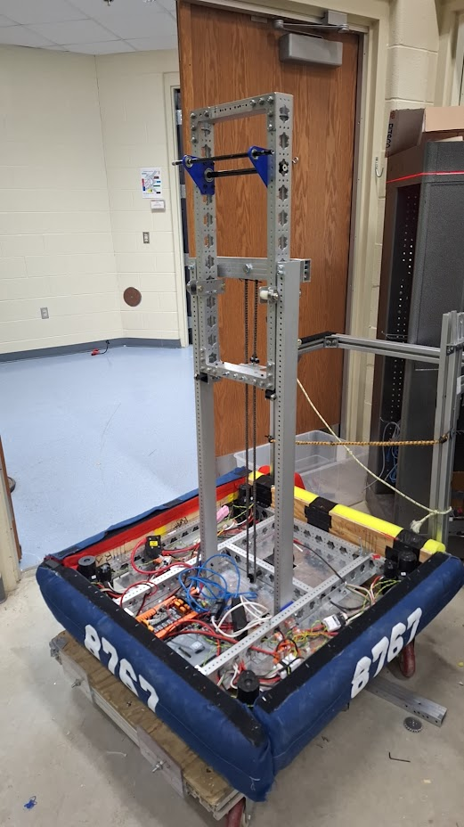

🔧 Robotics Projects

FRC Programming: Created programs for competetive robotics systems in the Java programming language. Covering important industrial concepts

FRC Elevator: Built a single-stage elevator with motion profiling.